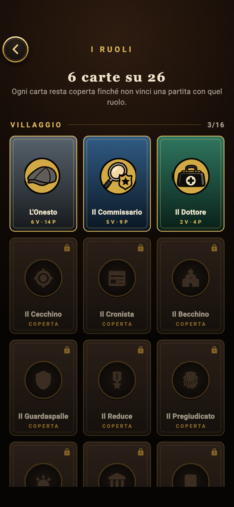
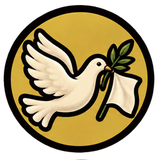
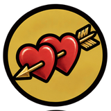
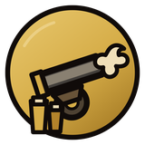
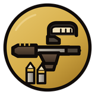
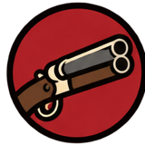
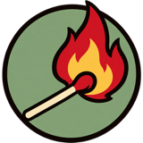

I ruoli.
29 carte, tre parti. All’inizio della partita ognuno riceve la sua e non la fa vedere a nessuno. Quali ruoli entrano dipende da quanti siete al tavolo (da 4 a 12): i più rari arrivano solo nelle partite grandi. Nel gioco, nella collezione dei ruoli, ogni carta resta coperta finché non vinci una partita con lei; poi tiene il conto delle tue partite, vittorie e serie migliore.
Villaggio
Non sanno chi uccide. Indagano, proteggono, accusano: vincono quando gli assassini sono tutti fuori.
18 ruoli-
L'Onesto
«Io non ho visto niente. Purtroppo è vero.»
Non hai poteri. Di giorno ascolta, accusa e vota per scovare chi uccide. Vinci con la Città, quando gli assassini sono tutti fuori.
-
Il Commissario
«Mentono tutti. Qualcuno meglio.»
Ogni notte scegli una persona e scopri se è della Famiglia. Attenzione: alcune carte ingannano, il Padrino per esempio ti risulta innocente.
-
Il Dottore
«Ricucio quello che gli altri strappano.»
Ogni notte scegli una persona, anche te stesso: se la attaccano, la salvi. Mai la stessa due notti di fila. Vinci con la Città.
da 5 giocatori
-
Il Cecchino
«Un colpo. Non due.»
Hai un solo colpo in tutta la partita: una notte scegli chi uccidere. Usalo bene, puoi sbagliare persona. Vinci con la Città.
da 7 giocatori
-
Il Cronista
«La verità esce in edicola alle sei.»
Una volta a partita, di notte, scegli una persona: all'alba tutti sapranno da che parte sta. Se muori quella notte, la notizia non esce.
da 8 giocatori
-
Il Becchino
«I miei clienti non mentono mai.»
Ogni notte puoi scegliere uno dei morti di notte e scoprire che ruolo aveva. Lo sai solo tu. Vinci con la Città.
da 8 giocatori
-
Il Guardaspalle
«Prima devono passare da me.»
Ogni notte proteggi una persona: se la attaccano, muori tu al posto suo. Vinci con la Città.
da 9 giocatori
-
Il Reduce
«Mi hanno già sparato. Gente migliore di voi.»
Di notte non fai niente, ma sei duro a morire: il primo attacco notturno contro di te fallisce. Vinci con la Città.
da 9 giocatori
-
Il Pregiudicato
«Ho pagato tutto. La fedina non lo sa.»
Sei della Città, ma attenzione: al Commissario risulti della Famiglia. Dovrai convincere gli altri che sei pulito.
da 10 giocatori
-
Il Messia
«Alzati. Non hai ancora finito.»
Una volta a partita, di notte, puoi riportare in vita uno qualsiasi dei morti. Vinci con la Città.
da 10 giocatori
-
Il Sindaco
«Non ho vinto le elezioni per stare zitto.»
Una volta a partita, durante il voto, puoi rivelarti: da lì il tuo voto vale doppio. Vinci con la Città.
da 9 giocatori
-
Il Portinaio
«Non chiedo chi. Guardo la porta.»
Ogni notte guardi la porta di una persona: all'alba sai se qualcuno è passato da lei, ma non chi. Vinci con la Città.
da 9 giocatori
-
Il Carceriere
«Qui dentro si parla. Fuori si muore.»
Ogni notte chiudi in cella una persona, mai la stessa due notti di fila: non agisce e nessuno la uccide. La interroghi in chat, e non sa chi sei.
da 8 giocatori
-

Il Pacifista
«Il sangue chiama sangue. Io chiamo la tregua.»
Una volta a partita, di giorno, sveli a tutti il ruolo esatto di una persona e il tuo: quel giorno non si vota. Vinci con la Città.
da 9 giocatori
-

Cupido
«Due cuori, una dote, nessuna via d'uscita.»
La prima notte leghi due persone, anche te stesso. Vincono solo se restano vivi tutti e due; se uno muore, l'altro lo segue. Tu vinci con la Città.
da 9 giocatori
-
Il Presidente
«Lo Stato non tratta.»
Tutti sanno chi sei, e non ti possono votare. La scorta ti salva dalle prime due notti in cui ti attaccano; alla terza muori. Se muori, la Città perde.
da 10 giocatori
-

L'Artigliere
«Io non sussurro. Io tuono.»
Hai due colpi, uno al giorno, dal secondo giorno: in discussione chi colpisci muore subito, davanti a tutti. Dal primo colpo tutti sanno chi sei. Vinci con la Città.
da 10 giocatori
-

Il Tiratore scelto
«Un respiro, un colpo, un nome.»
Di notte metti qualcuno nel mirino; di giorno puoi sparargli. Due colpi. Se è della Città, il colpo torna indietro e muori tu.
da 9 giocatori
Mafia
Si conoscono fra loro e ogni notte scelgono chi far sparire. Vincono quando sono tanti quanti tutti gli altri.
5 ruoli-

Il Picciotto
«Niente di personale.»
Sei della Famiglia. Ogni notte decidi con gli altri della Famiglia chi uccidere. Vincete quando siete tanti quanti tutti gli altri.
-
Il Padrino
«Io faccio solo favori. Chiedete in giro.»
Sei il capo della Famiglia: ogni notte decidi con loro chi uccidere. Attenzione: al Commissario risulti innocente. Vinci con la Famiglia.
da 10 giocatori
-
Il Sarto
«Cucio abiti di giorno e bocche di notte.»
Sei della Famiglia e di notte uccidi con loro. Una volta a partita puoi togliere la parola a qualcuno per un giorno. Vinci con la Famiglia.
da 7 giocatori
-
Il Compare
«Io qui ci passavo per caso.»
Sei della Famiglia e di notte uccidi con loro. Finché sei vivo, la Famiglia può parlare in segreto anche di giorno. Vinci con la Famiglia.
da 7 giocatori · solo online
-
La Prostituta
«Una canzone, un bicchiere, e la notte vola.»
Giochi per la Famiglia, ma non sai chi sono e loro non sanno di te. Ogni notte blocchi la mossa di chiunque, mai lo stesso due notti di fila. Se resti l'ultima, voti tu.
da 9 giocatori
Solitari
Non stanno con nessuno. Ognuno ha la sua vittoria, e la cerca a spese di tutti.
6 ruoli-
Il Fesso
«Colpevole io? Ma certo, come no.»
Giochi da solo e vinci se la piazza ti lincia: fatti sospettare! Se muori di notte non vale.
da 8 giocatori
-

Il Piromane
«A chi non piace un bel falò?»
Giochi da solo. Ogni notte cospargi di benzina una persona, oppure dai fuoco a tutti i cosparsi insieme. Vinci se resti l'ultimo vivo.
da 11 giocatori
-
Il Cacciatore di taglie
«Niente di personale. È lavoro.»
Giochi da solo e hai una taglia su una persona della Città, di cui vedi il nome. Se la piazza la lincia, vinci tu e la partita finisce.
da 9 giocatori
-
Lo Strozzino
«Un debitore morto non paga.»
Giochi da solo. Ogni notte proteggi una persona, mai la stessa due notti di fila. Vinci se arrivi vivo alla fine, chiunque vinca.
da 10 giocatori
-
Il Sicario
«Lavoro da solo. Pago io il caffè.»
Giochi da solo e ogni notte uccidi una persona. Attenzione: al Commissario risulti della Famiglia. Vinci solo se resti l'ultimo vivo.
da 12 giocatori
-
Il Capo della setta
«Non vi chiedo di credere. Solo di seguirmi.»
Giochi da solo: ogni notte converti una persona, che da lì vince solo con te e non sa chi altro c'è. Vinci quando tutti i vivi sono della setta.
da 11 giocatori